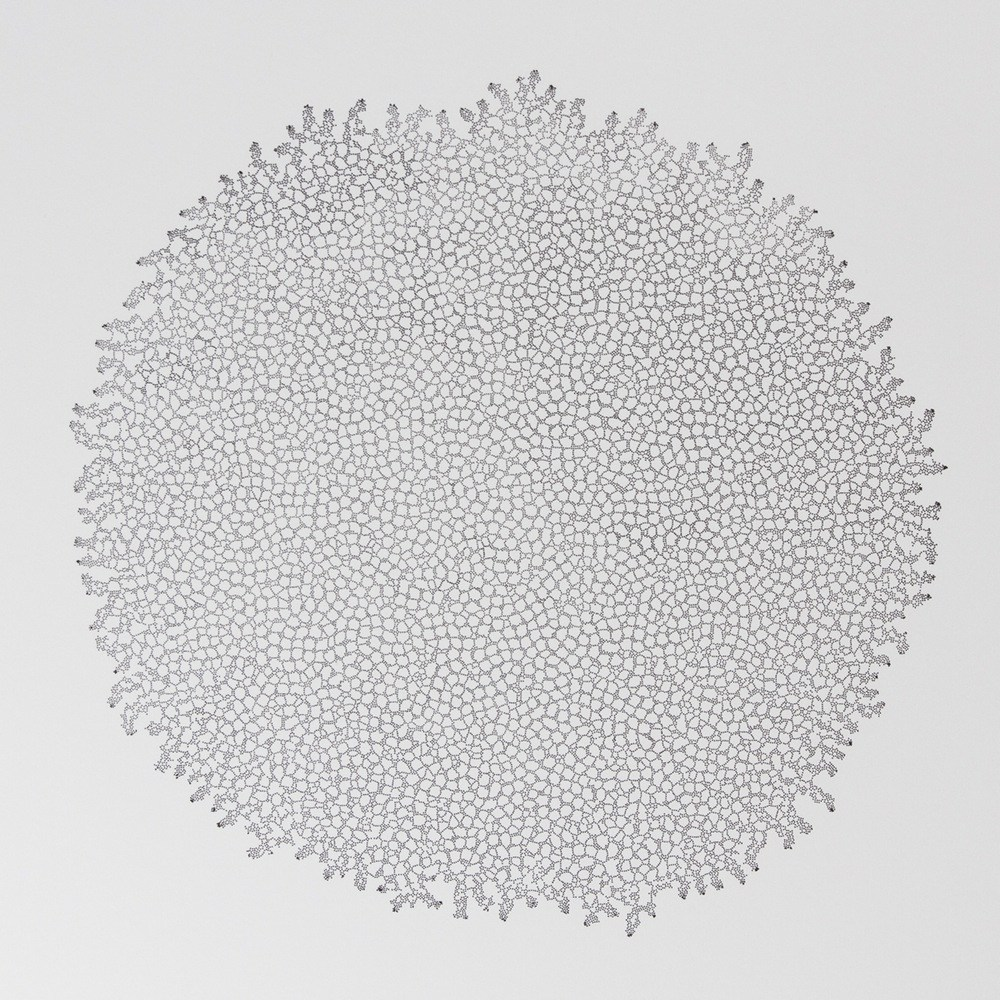
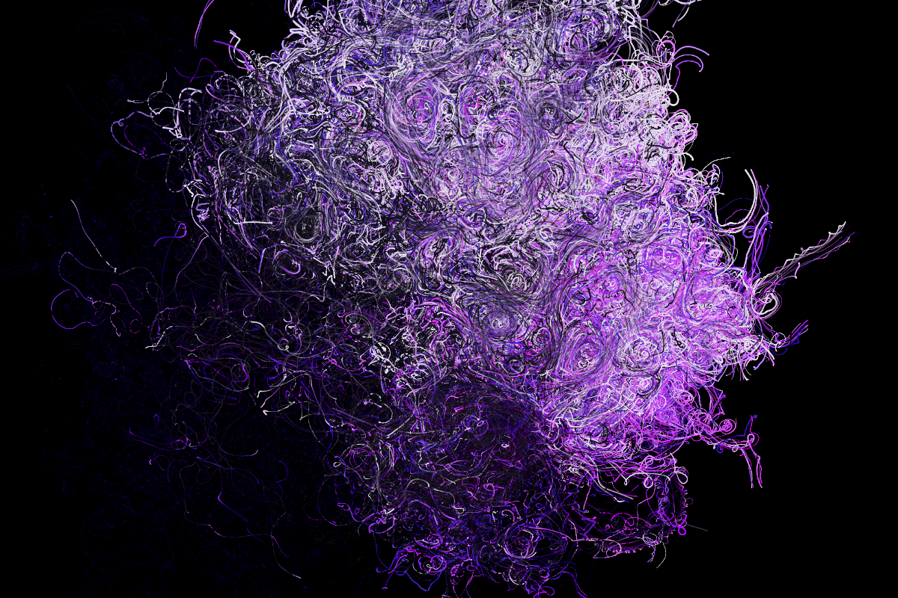
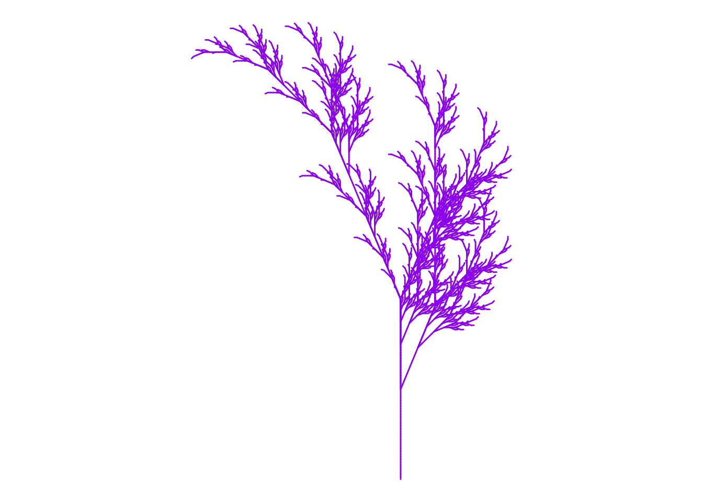
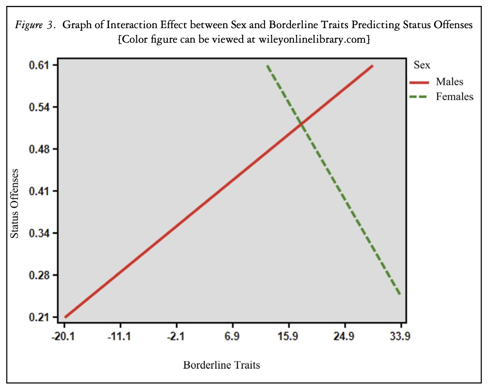

Here is my Assignment 1 for EPPS 6356.
- Google “generative art”. Cite some examples.

Hoff, Anders. 2016. Differential Lattice. https://inconvergent.net/generative/differential-lattice/ (September 13, 2022).

Stock, Mark J. 2021. Diaspora. http://markjstock.com/#/particle/ (September 13, 2022).

Brunner, Katharina. 2022. When Two Points on a Circle Form a Line. https://katharinabrunner.de/generativeart/ (September 13, 2022).
2. Run Fall.R (on class GitHub under R.
a. Give your own colors (e.g. Spring).
b. Export the file and post on your GitHub website.

3. Write a critique on a chart in published work (book/article/news website).

McGill, Kathryn A. and Stefurak, Tres. 2021. ‘“Man Up”: Sex-Differentiated Pathways of Juvenile Delinquency through Trauma, Borderline Traits & Offense Patterns’. Juvenile and Family Court Journal 72(3): 37-65.
The figure, Figure 3, is titled “Graph of Interaction Effect between Sex and Borderline Traits Predicting Status Offenses”. Interaction effects plots are used to visualize how the effect of one variable varies according to the value of another variable. According to McGill and Stefurak (2021), the female participants “exhibited higher rates of borderline traits, trauma symptoms and status offenses, as hypothesized, the sex by offending interaction suggests that these symptoms are unique predictors of male’s status offending, rather than for females”. This can be seen by the positive slope of the red line for male offenders in relation to borderline traits (Efforts to avoid real or imagined abandonment, a pattern of intense and unstable relationships, distorted and unstable self-image, including feelings of dissociation, e.g. feeling cut off from oneself, feeling outside of one’s body, impulsive and often dangerous behaviors, recurring thoughts of suicidal behaviors or threats of suicide or self-harming behaviors, e.g. cutting, highly unstable and changeable mood states, chronic feelings of emptiness, anger management difficulties, interpersonal distrust) and status offenses (McGill and Stefurak 2021). In contrast, negative slope of the green line for female offenders in relation to borderline traits and status offenses indicates these symptoms are not unique predictors of female’s status offending. Although the chart does clearly and evidently show the opposite effects sex has on the relationship between borderline traits and status offending, there are some important components of this chart that are missing. For instance, the chart does not have labels on any component of the figure. For this reason, there is no reference for the interpreter to understand what the measurements are for the x and y axes. Furthermore, there is no indication as to the significance of the x and y axes units or increments. The chart also has no figure description attached to it within the article, so the reader does not have anything to refer to while interpreting the chart. For this reason, it is difficult for the reader to understand the importance or pertinence of the figure alone or independently without referring to the discussion and conclusion of the article.